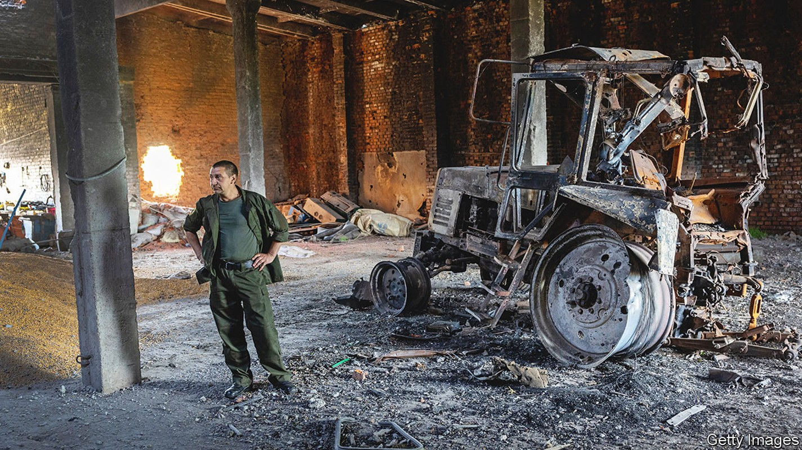
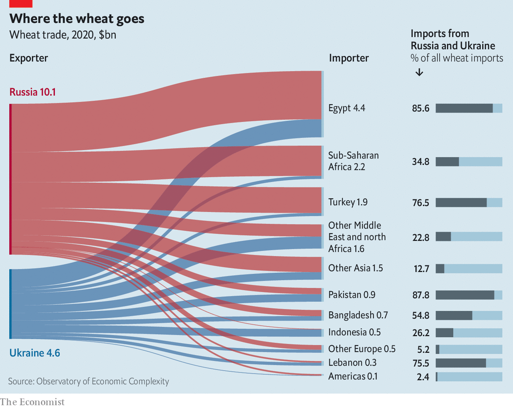
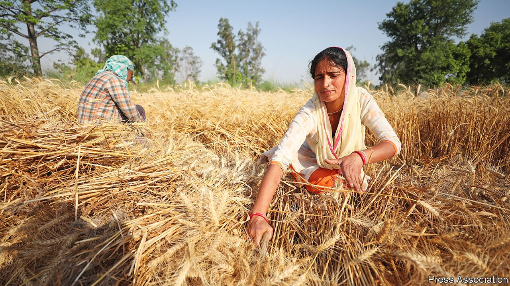

A world grain shortage puts tens of millions at risk
War, extreme weather and export controls are all contributing

In 2001 olena nazarenko’s father started farming in Lukashivka, a small village about 100km north of Kyiv, with three cows and a horse called Rosa (”Dew” in Ukrainian). In 2020 Mrs Nazarenko and her husband Andriy inherited the 400-hectare (1,000-acre) farm, now named Rosa after that founding horse. Early this year they took out a substantial loan to cover fertiliser for the coming spring-wheat crop.
Listen to this story.Enjoy more audio and podcasts on iOS or Android.
Listen to this story
Save time by listening to our audio articles as you multitask
On March 9th, well before they had planted any, Russian troops occupied the village and the couple fled. On March 31st, when the invaders had turned tail, they returned. It was a harsh homecoming. The main farm building was shelled out. Three tractors had been vandalised and their diesel drained. Of their 117 cows, 42 were dead and the rest were roaming fields littered with debris, mines, mortar shells, unexploded cluster bombs and burnt-out trucks. Fifty tonnes of wheat, sunflower seed and rye had been destroyed, costing them tens of thousands of dollars. “We have no money left,” says Mrs Nazarenko. “We have nothing to pay salaries and are struggling to pay interest on the loan.”
Lukashivka and the villages around it have seen thousands of tonnes of grain destroyed or left to rot; much the same is true throughout the country’s war zones. Russian forces have targeted grain elevators and fertiliser plants, leaving the infrastructure in pieces. The share of last year’s grain harvest still in the country—about 25m tonnes of grain, a lot of it maize (corn)—is stuck there, because Odessa’s ports, through which 98% of the grain exports normally pass, are blockaded. Getting the grain to alternative ports in Romania, Bulgaria and the Baltics is hard. “Before the war Ukraine exported about 5m tonnes of grain a month,” says Mykola Solskiy, the minister for agriculture. “Last month we managed to get 1.1m tonnes out.”
Vikas Kumar Singh, a farmer in Dharauli, a village in Uttar Pradesh about 700km south-east of Delhi, has no unexploded ordnance to worry about. But his March, too, was troubled. “It got too hot too early,” he explains, picking up a handful of recently harvested wheat from a pile in his shed with a dejected look on his face. “See, the grains are thinner than they’re supposed to be.” After being battered by severe winds and hail in February, the Chandauli district in which Dharauli sits suffered intense and unseasonable heat, shrivelling the ears of wheat when they should have been burgeoning. The same happened across most of the country. “Things are much worse in Maharashtra,” says Awadh Bihari Singh, who farms nearby.
Mr Vikas Singh reckons that his yield is down by about a quarter compared with last year’s. The district as a whole has harvested around a fifth less wheat than in a normal year, reckons Mr Awadh Singh. Before the heatwave, when a bumper harvest had seemed on the cards, the government had looked forward to the rupee being strengthened by grain exports. When expectations of the harvest’s size tumbled it flip-flopped. Accelerating exports encouraged by high prices abroad raised worries of a shortage at home.
On May 13th, the Indian government imposed an export ban on wheat, though it says it will make exceptions for specific countries in need; on May 15th a 500,000-tonne deal with Egypt was reported. There are currently 26 countries implementing severe restrictions on food exports. In most cases they are outright bans. The various measures cover 15% of the calories traded worldwide.
It takes a world to feed a world, and the way the world does it is through trade. By some estimates four-fifths of the global population live in countries which are net importers of food. More than 20% of the world’s calories, and more than 18% of its grain, crosses at least one border on the journey from plough to plate.
At the beginning of 2022 the world-spanning system which makes this possible was already in a ropey state. The number of people with access to food so poor that their lives or livelihoods were at immediate risk had risen from 108m to 193m over the past five years, according to the un’s World Food Programme (wfp). A lot of that near-doubling of “acute food insecurity” was due to the covid-19 pandemic, which reduced incomes and disrupted both farm work and supply chains; a good bit more was down to rising prices of energy and shipping as the effects of the pandemic wore off. Things were made worse by swine flu in China and a series of bad harvests in exporting countries, some of which were due to La Niña conditions that began in the middle of 2020. La Niña is a recurrent pattern of currents and wind patterns in and over the equatorial Pacific which has worldwide effects, just as its also-troublesome counterpart El Niño does.
Global grain stocks were, admittedly, quite high. But they were mostly in the hands of well-off importing nations, not those of exporters keen to sell them or poor importers likely to need them. “If we do not address the situation immediately,” David Beasley, who runs the wfp, told the Munich Security Conference in February, “over the next nine months we will see famine, we will see destabilisation of nations and we will see mass migration.”
Just six days after he spoke those words Russia rammed a rifle barrel into the already creaking machinery. In 2021 Russia and Ukraine were the world’s first and fifth biggest exporters of wheat, shipping 39m tonnes and 17m tonnes respectively—28% of the world market. They also grow a lot of grain used to feed animals, such as maize and barley, and are the number one (Ukraine) and number two (Russia) producers of sunflower seeds, which means they have 11.5% of the vegetable-oil market. All told, they provide almost an eighth of the calories traded worldwide.
Ukrainian food exports were promptly throttled by the war; Russian ones were dented by the indirect effects of sanctions. Grain prices shot up. Having fallen back a little as the shock wore off, they are now on the rise again. On May 16th, the first day of trading after India imposed its restrictions, wheat prices in Chicago, the global benchmark, rose by 6%; on May 18th they were 39% higher than they were when Russia launched its invasion.
America’s department of agriculture (usda) reckons that war and bad weather mean global wheat production is likely to fall for the first time in four years, which is bad. What is worse is that wheat is not really traded globally. Buyers often have long-standing bilateral relationships with exporters and set channels of trade which make switching suppliers hard. According to the un’s Food and Agriculture Organisation (fao) nearly 50 countries depend on either Russia or Ukraine, or both, for more than 30% of their wheat imports; for 26 of them the figure is over 50%.
That it should come to this
East Asian countries which import a lot of Black Sea wheat, such as Indonesia, can fairly easily switch to rice. For most other big importers cutting off wheat would involve drastic changes in diet. Many countries in the Persian Gulf and north Africa eat at least twice as much bread per person as gluten-loving Americans. Some grain can be diverted from other markets, at the right price, and European farming interests say that governments are coming to them actively seeking deals: “Everything is on the table”, says a big French producer.

Still, shortfalls seem certain. The wfp, on which more than 115m people depend, and last year got 50% of its wheat from Ukraine, says the crisis could drive 47m more people into acute food insecurity.
The war is also having effects on the things farmers need to grow food in the first place—and thus on how much they will plant in the seasons to come. Farms run on fuel. With Russia the world’s biggest natural-gas exporter and its second-biggest oil exporter, fuel prices have risen. Farms also need fertiliser. Of the three main types of industrial fertiliser Russia is the biggest exporter in one market (nitrogen-based fertilisers, the only expensive ingredient of which is natural gas), the second biggest in another (potash, which provides potassium) and the third in the third (phosphates). Pesticides and herbicides, often produced from hydrocarbons, have also gone up in price.
There is a lengthening shadow over another of the farmers’ prerequisites, too—one which predates the war and will outlast it. Good harvests need good, or at least moderate, weather. They are not well served by extremes. But climate change means extremes are increasingly what they get. Analysis by Britain's Met Office shows that global warming has made an extreme Indian heatwave like this year’s 100 times more likely.
And global markets mean the effects of these extremes can add up in a way that goes beyond the globally correlated patterns of disruption brought on by the see-sawing of La Niña and El Niño. The deluge which forced Chinese farmers to delay planting winter wheat last year, thus reducing this year’s expected harvest, and India’s subsequent stem-shrivelling heat may not have any direct connection. But when the probability of extremes goes up worldwide, so too does the probability of multiple regions suffering from one sort of extreme or another at the same time, or in the same time frame.
And time frames matter. Although many commodities can be produced year round, crops depend on the seasons. Miss the window for certain crucial steps, such as planting, fertilising or harvesting, and much of a year’s work can be lost in a matter of weeks.
This is the worry when it comes to Ukraine's winter wheat. Sown last year, it will be ready for harvest come June. Mr Solskiy expects this year's harvest to be 20-30% smaller than expected. Roughly half the winter-wheat fields are in the part-occupied, part-fought-over south-east. Many fields are scattered with explosives. Infrastructure has been destroyed. Water, power and fuel are sure to be in short supply.
Yields in the fields which do get harvested will be down by 10%, according to the fao: fertiliser applications have been missed; pests and diseases have run amok. And as long as Odessa is blockaded, the harvest will have no route to market. Nor can it be stored away. The blockade means that the country’s silos are still more than half full with last year’s crop. Unless exports through the Black Sea start again millions of tonnes could simply rot.
Things rank and gross in nature
The crops now nodding their heads in Russian fields should fare better. International sanctions do not target food exports directly, and though they make the trade more difficult, ways through and around the problems they create can be contrived. Though exports have dropped by a few million tonnes, Russia has managed to sell more grain since the war began than experts expected, with Egypt, Iran, Syria and Turkey the main buyers. When this summer’s harvest is brought home most of it will get to market. But that will not set right the shortfall in Ukraine.
Nor is the rest of the world well placed to make good the lack. China has warned that last year’s floods mean its winter-wheat crop could be “the worst in history”. Much of America’s grain belt is undergoing a drought as bad as the one which it saw in 2012-13. Around 40% of the wheat growing in America’s parched plains was recently deemed in poor or very poor condition (15-20% is average). On May 12th the usda predicted that the country’s production of hard red winter wheat, the main kind grown in the plains, would fall by 21% compared with 2021. Europe is getting too little rain at a point in the season when wheat is most vulnerable to dryness. A little late rain may be enough to revive the crops. But it seems certain that production will come up alarmingly short this year.
There are still stocks in exporting countries that could make up some of the difference. Nick Schaefer, who works at a grain elevator in Rugby, North Dakota, says he sees 40 to 50 trucks a day dropping off grain to be loaded onto trains heading west. And he knows there’s more where that came from. “It seems like whenever they sold, [the price] keeps going higher. So definitely, what they’ve got left in the bin, they’re probably going to hold on, just to see what happens.”
Normally the farmers would have an incentive to run down stocks before the harvest, when prices typically drop. But this year that looks unlikely to hold. Futures markets expect wheat and maize prices to stay at today’s extortionate levels until mid-2023. Mr Solskiy says that it will be when the harvest fails to change things that the world will start to feel the true impact of the crisis.
“There is no room for any weather issue in the northern hemisphere this season,” says an executive at one of the world’s largest traders. While Ukraine’s output remains inaccessible, “every single tonne in the market will be needed,” says Michael Magdovitz of Rabobank, a Dutch lender. That tight coupling of supply and demand means that prices will be very volatile, too, moving on the slightest bit of news; further shocks could send them much higher.
What of harvests after that of this year’s winter wheat? In Ukraine and elsewhere a smaller wheat crop is also planted in the spring, along with other things. For Mr Nazarenko this meant first uprooting the aftermath of war. With a number of employees, friends and relatives he walked the fields, removing spent shell cases and some unexploded shells, marking unexploded mines, pulling a “Smerch” rocket from the mud in which it was entombed with a tractor. “It was scary, but we did not have a choice,” he says.
In the end, he managed to sow most of his fields, barring the one still taken up by burnt-out Russian trucks. That puts him ahead of many. Some lack seeds. Some must plant at night to avoid air raids. Some are planting potatoes for home consumption rather than grain for export. A recent survey by Ukraine’s agriculture ministry suggests 30-50% of the country’s spring-wheat fields could end up not being planted. Yields may also suffer. Fertiliser is not yet scarce but some may well be repurposed to make explosives; ammonium nitrate serves well in both offices. Diesel is twice the price it was before the war, and it is hard to get hold of even if you can pay. Pesticides look set to be scarce.
Grown by what it fed on
Russian farmers do not face the problems of bombing, but they too will be short of inputs. The country’s large farms, which specialise in supplying global markets with grain, require a lot of them. Last year Russia imported $870m-worth of pesticides and $410m-worth of seeds—mostly from the eu. Elusive bank financing, payment headaches and a lack of willing shippers are making such purchases much more difficult. Most big Western seed and chemicals companies have pulled out of Russia, or are in the process of doing so (Chinese ones have stayed). Some may return after the war ends, but some may stay away.
Fertiliser will not be in short supply for the Russians. But it will be in most other places. In 2021, 25 countries got more than 30% of their fertilisers from Russia. In Europe energy-security concerns are restricting the use of natural gas to make nitrogen-based fertiliser, so the continent will need to import more, adding extra demand to a market where the natural-gas price has already increased most manufacturers’ costs. Nigeria and Qatar, flush with natural gas, are opening new nitrogen plants; there also seems to be some room for increasing Canada’s potash production. But prices will stay high.
More costly energy and fertilisers drive up prices across all sorts of agriculture. The farmers in Chandauli say high prices for fertiliser, diesel and labour have pushed their costs up by 20-25% so far this year. And wheat prices have effects across the market, too. If the cost of a commodity goes up, consumers look for alternatives. That is why food-price inflation is being seen in commodities that are not directly affected by the war, says Seth Meyer, the usda’s chief economist. Indicators of price volatility compiled by the International Food Policy Research Institute in Washington, dc, are flashing bright red for all major grains—including, for the past couple of months, rice, for which there are currently no supply concerns.
Flat and unprofitable
This all serves to blunt a seemingly natural response to high grain prices: for farmers to grow more grain. When input prices go up more than the grain prices, farmers’ margins fall. Josef Schmidhuber of the fao reckons the price of cereals, and food more generally, as perceived by farmers—that is, taking into account the costs of inputs—reached a peak in March 2021. Since then they have fallen by 27%.

Rather than rushing to plant more grain because the sale price looks high, farmers are looking at switching to crops with lower input costs. In March a usda survey found many American growers intending to move from maize to soyabeans this season. Grain prices may yet climb higher, tempting farmers back in. But they are also likely to remain highly volatile, depriving growers of the certainty they need to plan a big expansion one year in advance.
If it is hard to increase supply, what about decreasing demand? In theory there are low-hanging fruit where crops are used to feed cars or cattle rather than people. Gro Intelligence, a data firm, calculates that the calories diverted by current biofuel production and new commitments could soon be equivalent to the yearly needs of 1.9bn people. Biofuel production has increased markedly in America, Brazil and Europe as the oil price has risen; expensive crude makes the sector more profitable. Repealing biofuel mandates could lessen the damage.
The amount of food eaten by animals is even more vast. Last year China imported a record 28m tonnes of maize—more than what Ukraine normally exports in a year—to feed its immense hog herd. About 40% of the wheat grown in the eu is eaten by cows. About a third of America’s maize is devoured by cattle. If the amount of such feed is reduced, though—or if, by using substitutes such as grass, maize stalks and silage, its energy content is lowered—the animals grow less, or more slowly, or both. That drives up the price of the end product. In the food-price crisis of 2007-08 changes to animal feed, together with culls and production cut-backs, caused meat and dairy prices to rocket.
No countries are immune to the effects of this crisis. Lamentably, people go hungry even in the richest economies. The countries hit worst, though, are poor ones, because poor people spend a greater share of their income on food. In most emerging markets food consumes something like a quarter of household budgets, as opposed to less than a fifth in advanced economies. In sub-Saharan Africa the figure is 40%. And grain makes up a larger part of those budgets than it does in richer places.
Many of these economies were in poor shape well before the food crisis hit. Across sub-Saharan Africa, output remains substantially below the level that they would have reached had pre-pandemic trends continued. The debt burdens of more than half of the region’s low-income economies are either judged to be unsustainable or may soon become so, according to the imf. Governments in such straits are poorly placed to help their citizens weather a food-price shock.
Reactions to higher food prices in rich countries are making things even harder. Food prices account for about 1.3 percentage points of America’s 8.3% inflation rate, and about 1.0 percentage points of the euro area’s 7.4% rate. They are thus one of the factors driving more aggressive monetary policies. The higher rich-world interest rates which ensue drag down currencies and tighten financial conditions in emerging economies. Falling currencies make food imports costlier still.
To bolster their currencies such countries need either to increase interest rates, to intervene with their often scant hard-currency reserves, or to do a bit of both. All the options come with costs that can exacerbate food insecurity. Putting up interest rates, as many have done over the past year, has in most cases merely slowed the pace of depreciation and has driven up the cost of credit—which hurts farmers, especially when inputs are expensive. Using up currency reserves, on the other hand, means they cannot be used to buy food. Choosing not to subsidise food and not to prop up the currency may preserve reserves, but it greatly increases the risks of social unrest.
It is possible to have the currency slide and to lose reserves at the same time. Egypt chose to allow the Egyptian pound to depreciate by 14% in March rather than run down its reserves to prop the currency up. Even so, it saw its hard-currency reserves drop by about 10%, to $37bn, from February to March, in part because, as the depreciating pound made it harder for people to buy food, the state was buying more for them. Turkey, too, has experienced both a drop in its reserves and in the value of its currency since the beginning of the year. Its inflation rate has surged to nearly 70%. Iran has experienced demonstrations of public anger since reducing grain subsidies. Trouble seems certain to spread.
The World Bank sees the war’s effects on trade and welfare as representing a reduction in global real income of about 0.74%, or $600bn. In low-income economies the figure rises to 1.0%—which given their low incomes represents only about $5bn. That sounds rather small. But the concentration of those losses in places wracked by hunger looks set to bring with it spectacularly disproportionate social, political and human damage.■